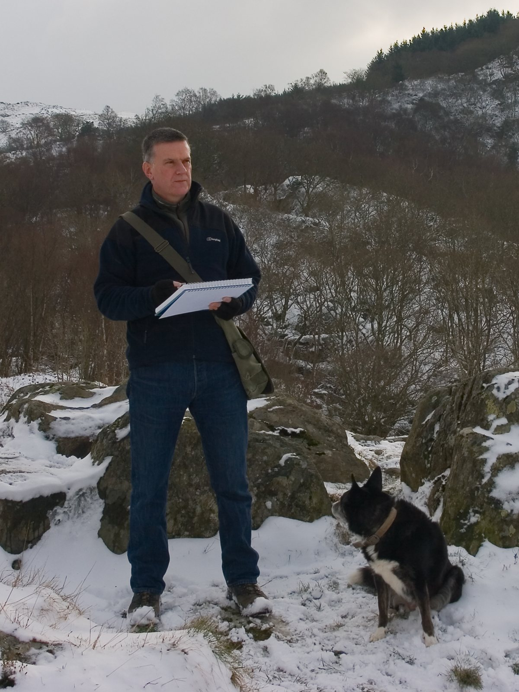

About Chris

Chris Hull is a watercolour artist living in North Wales, on the edge of Snowdonia National Park. He uses the fluid, spontaneous nature of watercolour to capture the dramatic scenery around him: light breaking over the mountains, mist on the lakes, and the changing colours of the seasons.
His paintings have been exhibited in galleries across North Wales and the Lake District, and are held in private collections around the world.
He was the Welsh Regional Final winner and a grand finalist on Channel 4’s Watercolour Challenge, and his work has been featured in Great British Life magazine.
Every painting is an original, and Chris is always happy to talk about painting a scene for you.
Press and credentials
- Watercolour ChallengeChannel 4 · Welsh Regional Final winner & grand finalist
- Great British LifeFeatured in the magazine
- ExhibitedGalleries across North Wales & the Lake District
- CollectedPrivate collections worldwide